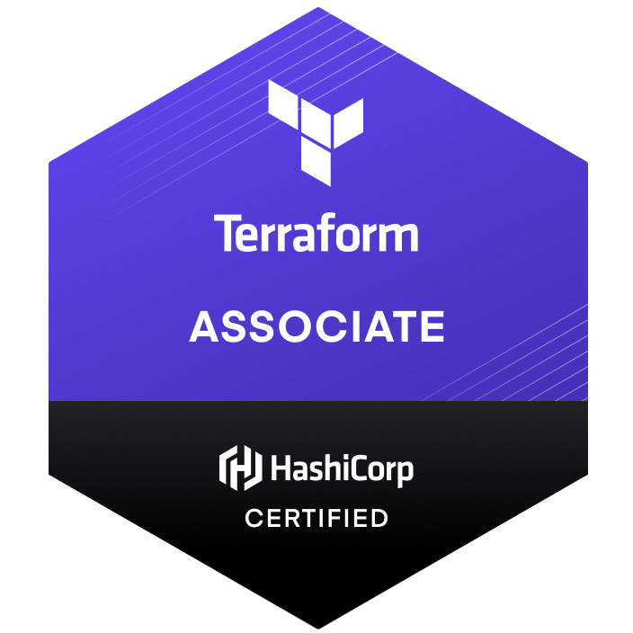
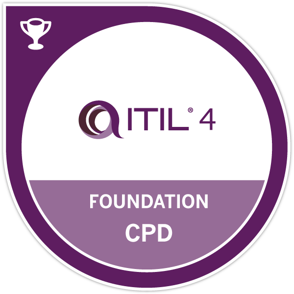
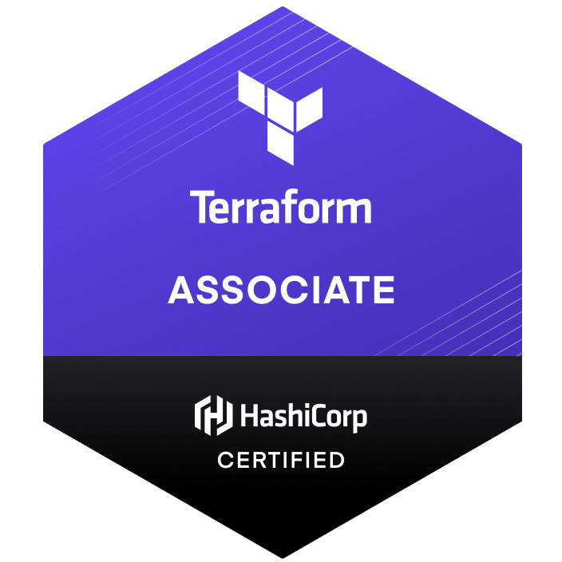
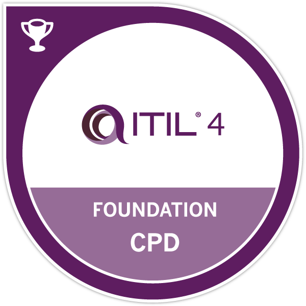

RODRIGO MIRAVALLES
Hi! Welcome!
I am a daily learner and an attentive listener, passionate about people and technology. I love challenges, and I’m never comfortable in my comfort zone.
I have lived and worked in five countries. I love being immersed in international and multicultural settings, and to listen to different languages.
I have more than 10 years of experience in project management, having worked in projects in Brazil and Macedonia, all involving international teams, located in different parts of the world. This international experience was invaluable, as I am now much more prepared to face the new paradigm of remote work.
Even though we had been using mostly the PMBOK framework and more waterfall oriented approaches, I always tried to bring more agility to the table. I’m passionate about Agile processes and methodologies, and it’s something I dedicate time to study and learn.
I moved to Spain with my family 3 years ago, and I am now pursuing new challenges in the Cloud and DevOps space. I have developed a solid knowledge of cloud infrastructure and Azure administration (I am a certified Azure Administrator Associate, and certified Identity and Access Administrator Associate), and I’m familiar with tools such as Terraform (I hold a Terraform Associate certification), Docker, Git, and Linux. You can check my projects in my blog below.

 
